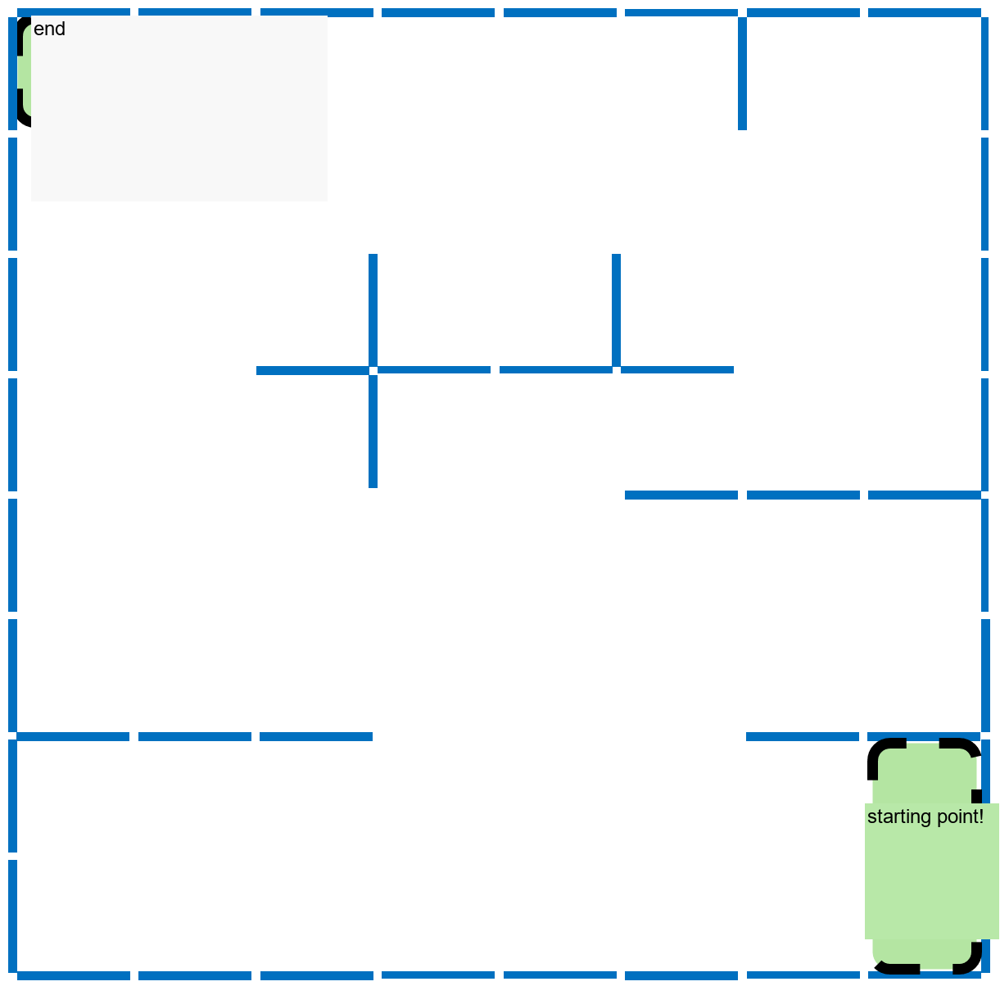

Competition Brief: Integrated Project Competition
Confirm the Group URI Before Running
Python scripts in this experiment read the complete radio URI assigned in Experiment 3 from the CFLIB_URI environment variable. Do not copy the group address into every code file. In each new terminal, check it first:
echo "$CFLIB_URI"The output must exactly match the complete URI on the group label, including the interface, channel, data rate, and address. If it is empty or incorrect, repeat the “Save the complete URI in the virtual machine” step in Experiment 3 before running the script.
1. Integrated project demonstration task description
This task is oriented to the experimental content of the first three days of this summer school, and is designed to allow students to comprehensively demonstrate environmental configuration, drone control, sensor application, path planning and team collaboration capabilities. The presentation task encourages everyone to use their creativity within safe boundaries and organize the previously completed experimental content into small projects that can be demonstrated, explained, and repeated.
2. Task content
This comprehensive project display is divided into two sections: creative tasks and racing tasks. Completing basic tasks can be regarded as meeting the display requirements; if the task completion effect is better, or if independent optimization ideas are reflected in path design, control strategy, sensor use, team collaboration, etc., higher feedback can be obtained in the display evaluation.
Creative task section
The display tasks in this section are expected to be completed by students based on the Crazyflie drone sensor application knowledge and corresponding software programming knowledge they have learned. There are no restrictions on which sensors or program modules to use. Students are encouraged to be creative based on the rules and complete the tasks with better strategies.
1. Task description
Now let’s explain the task requirements of the practical demonstration task of this section. First, the map environment of the mission is as follows, and the schematic intervals of each mission area have also been marked. Among them, the sizes of areas A, B, and C are the size of 2*2 baffles (the height of the rectangular baffle is 45cm and the width is 35cm. The baffles are placed vertically, that is, the actual size of area ABC is 70cm*70cm). The areas R1, R2, R3, and R4 are the size of 1*2 baffles, among which R1, R2, and R3 are located in areas A, B, and C respectively.
The general mission requirements are as follows: the drone is placed anywhere in area A to take off, and needs to pass through points B and C and finally land in point A. The order of passing through points B and C is arbitrary, that is, the general requirements for passing points are:
ABCA or ACBA
Reward mechanism: The drone's flight path will receive rewards if it passes through R2, R3, and R4.
I hope students will consider the cost of the overall drone flight path: flight path length + reward

2. Demonstration procedure
In order to ensure the safety and stability of flight, the flight speed of the drone is limited to less than 0.3m per second and is constant throughout the entire process. Before each demonstration is ready to be shown to the teacher, the code details and flight speed and other parameters need to be shown to the teacher. After the teacher confirms, the code is run to allow the drone to take off. This demonstration can be counted as a valid score. During the teamwork during the demonstration, it is expected that one student will control the computer terminal and be responsible for takeoff and emergency stop, while the other student will be responsible for recording the entire process from takeoff to landing as a backup for the evaluation criteria. The teacher will be standing by to time the drone from the time it starts moving on the xy plane to the time it starts landing. The formula for calculating the final score is as follows:
Creative-section scoring formula
S = v × (t1 - t2) - Reward + Punish
S: final score in metres; a lower value is better.v: constant flight speed used throughout the task, in m/s.t1: measured time from the first xy-plane movement at the start until landing begins, in seconds.t2: total duration of thetime.sleepcalls placed after movement steps to stabilize the aircraft, in seconds; the instructor confirms this value from the code before takeoff.Reward: 1.4 m each for R2 and R3, 4.9 m for R4, and 1.05 m for R1. Add all rewards earned before substituting the value into the formula.Punish: 0.35 m for a non-standard landing position inside Area A; otherwise 0.
3. Detailed evaluation criteria
The final display evaluation results of the creative section from low to high are: pass, good, and excellent.
Completing the basic tasks (i.e. taking off from point A, passing through B and C and then returning to A) will result in a passing score in this section.
During the entire flight, the height of the drone cannot exceed the height of the baffle, and it cannot collide with the baffle (extremely slight scratches do not count), otherwise the flight mission will be considered a failure.
The evaluation criteria for the vertical projection of the drone are based on the positions of the four motors. If the vertical projection of the four motors is in a certain area, it is deemed that the projection is completely within this area. If the projection of one motor passes through a certain area, it is deemed to have passed through this area.
If the vertical projection of the drone completely passes through areas B and C, it will be counted as having passed through areas B and C. When the drone lands, it will be considered as landing completely within area A. If the entire drone is only partially located in area A when landing in area A, a penalty of 0.35m will be imposed (the total score plus 0.35m). If the entire drone is not in area A at all when landing, the flight mission will be deemed a failure.
For R2, R3, and R4 areas, if the vertical projection of the drone passes through this area during flight, you can get rewards in this area. When the drone lands, the part of the projection that is stationary on the ground and has two motors is in the R1 area, you can get rewards in this area.
4. Demonstration evaluation instructions
When the final results are settled, the top one-third group will receive an excellent rating, the middle one-third group will receive a good rating, and the bottom one-third group will receive a passing rating.
Encourage technical creativity:
A total of two valid results have been obtained and no penalty was imposed on these two results. The API used by the code to run the drone twice is not exactly the same (for example: motioncommander, multiranger, positioncommander).
A total of two valid results have been obtained and no time penalty was imposed on these two results. The general operating logic used in the code for running the drone twice is completely different (for example: the use of conditional control statements while and if else).
Other uses of technology that teachers believe reflect independent creativity.
If one of the above conditions is met, the rating can be raised by one level when the final results are settled. If two conditions are met, the rating can be raised by two levels, capping it at an excellent rating.
5. Demonstration suggestions
It is recommended that the drone stay away from the baffle when taking off and set the take-off speed lower to facilitate stable take-off attitude and reduce the attitude after each take-off to a stable position.
Make sure there is a student controlling the terminal at all times. If the drone starts scratching the bezel, please terminate the program as soon as possible to avoid damage to the drone hardware.
Pay attention to the order during the test flight at the venue. Students are consciously courteous to avoid collision and impact of drones.
If the above rules are unclear or unclear, consult the teacher to clarify the standards.
Speed task section
The display theme of this section is "speed", and the fastest completion of the task is the best. However, students must pay attention to flight safety and try to ensure the safety and integrity of the drone hardware.
1. Task description
The map environment of this section is consistent with the map environment of the creative section. For detailed map size parameters, please refer to the description of the creative section module.
The general mission requirements are as follows: the drone takes off from any starting point as shown in the figure and lands at the end point. The timing starts from the time when the drone takes off and leaves the ground, until the drone completely lands and remains stationary in the end area. Less time spent, better results. There is no flight height limit, but you must pay attention to flight safety! Pay attention to protect the drone hardware from damage!

2. Demonstration procedure
Two methods
① When you are ready, find the teacher to help you time and log in the scores. They will help you time and log in the scores according to the above question requirements.
② You can shoot a video to record the entire flight process yourself, and use the length of the video to judge the overall time spent logging in. However, you must pay attention to the video to clearly capture the entire process of the drone taking off and landing, when the drone started to take off, and the final landing position of the drone to see if it is in the final landing range.
3. Detailed evaluation criteria
The final criterion for judging whether the drone lands at the end point is that the position of at least two motors of the drone is within the end point area, including on the boundary. If the above criteria are not met, but at least one motor is located within the finish area or on the boundary, a 5-second penalty will be included in the score. Other landing situations will not be included in the score.
4. Demonstration evaluation instructions
The final results of the racing section are sorted by group and included in the comprehensive display evaluation together with the performance of the creative section.
5. Demonstration suggestions
Make sure there is a student controlling the terminal at all times. If the drone starts scratching the bezel, please terminate the program as soon as possible to avoid damage to the drone hardware.
Pay attention to the order during the test flight at the venue. Students are consciously courteous to avoid collision and impact of drones.
If the above rules are unclear or unclear, consult the teacher to clarify the standards.
It is strongly recommended that students get a relatively basic score first, and then continue to optimize based on the results.
Final integrated demonstration evaluation
In principle, the display performance of the two sections (creative + racing) each accounts for 50%. The comprehensive evaluation index is calculated as follows:
Comprehensive evaluation index = (creative section evaluation ranking + racing section ranking)/2
In the creative section, those with excellent evaluations are ranked 1, those with good evaluations are ranked 2, and those who have completed the basic requirements are ranked 3.
Ultimately, the smaller the comprehensive evaluation index of the group, the better the comprehensive project display evaluation.
Competition Arena Record
Competition evaluation should combine on-site flight, terminal logs, and visual records to check key passing points and safety boundaries.

Integrated-task Flight Record
The video record is used to check route completion, safety boundaries, and scoring evidence.